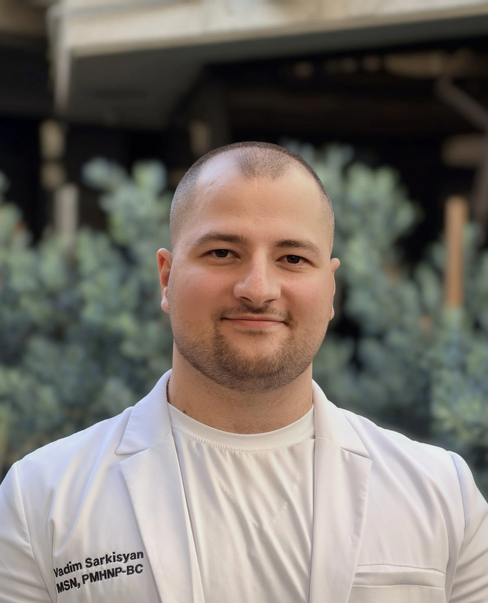

Vadim Sarkisyan, PMHNP-BC, is a board-certified Psychiatric Mental Health Nurse Practitioner with more than five years of experience in mental health care. Before becoming a nurse practitioner, he worked for four years as a psychiatric emergency nurse at Olive View–UCLA Medical Center. Since 2023, he has practiced as a psychiatric nurse practitioner, providing compassionate, personalized, and evidence-based outpatient care.
Vadim began his nursing career with a strong foundation in compassionate, patient-centered care.
Working in the psychiatric emergency room, Vadim cared for patients during urgent and vulnerable moments and developed experience assessing complex, high-acuity mental health concerns.
Vadim completed his graduate education in psychiatric mental health nursing and earned his PMHNP credentials.
Vadim has provided psychiatric evaluations, medication management, supportive interventions, and ongoing outpatient care as a psychiatric nurse practitioner since 2023.
He brings together his prior experience as a psychiatric emergency nurse and his current outpatient work as a psychiatric nurse practitioner to provide thoughtful, practical, and individualized treatment.
We listen first, and treat every person with dignity and understanding.
Every care plan is tailored to your unique needs, lifestyle, and goals.
We use proven methods and up-to-date research to ensure the best outcomes.
Telehealth lets you access expert care from the comfort of your home.